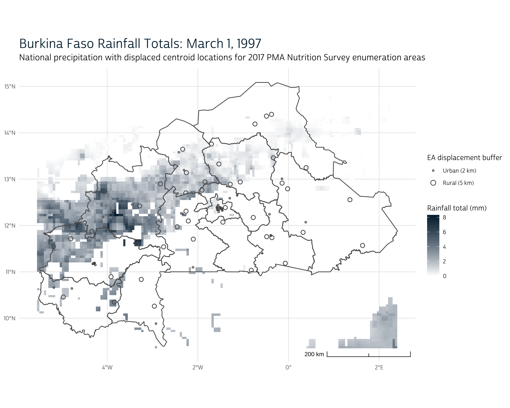

If youve been following along with this series, you already know that PMA nutrition surveys offer researchers a unique opportunity to connect nutrition data for women and young children with data about their local health and nutrition services environment. PMA promotes this type of contextual research by cluster sampling both households and service delivery points within the same geographically-defined enumeration areas.
In this post, well take a look at another approach to studying contextual factors that impact nutrition. Specifically, well be laying the groundwork for our next post, where well dive into a recent paper published in Environmental Research Communications that explores the impact of climate change on rainfed agriculture in Burkina Faso. As well see, the authors use PMA nutrition data together with local precipitation measures from the Climate Hazards center InfraRed Precipitation with Station dataset (CHIRPS) to show how spatial patterns of growing season quality impact the quality and variety of foods available for women and young children.
Research like this is made possible when we know the approximate centroid location for enumeration areas used in PMA nutrition surveys. PMA offers displaced GPS coordinates for all of its nutrition surveys here. In preparation for our next post, well show how to combine these GPS coordinates with an IPUMS PMA data extract and precipitation raster data downloaded from CHIRPS.
Setup
To get started, well download a 2017 Burkina Faso nutrition data extract from IPUMS PMA and load it into R. Weve selected responses only for Females and Children with Nutrition Information (all other household members have been omitted). As usual, well save the dat file together with the xml codebook in our working directory, and well then load both into R with the tidyverse and ipumsr packages.
library(tidyverse)
library(ipumsr)
dat <- read_ipums_micro(
ddi = "data/pma_00002.xml",
data = "data/pma_00002.dat.gz"
)
Notably, IPUMS PMA does not disseminate the GPS coordinates well be using in this post. Instead, youll need to apply to download them directly from our partners at PMA. Once approved, youll receive a CSV file containing the displaced centroid for every enumeration area represented in our data extract dat. Youll also receive complete documentation detailing the procedure PMA used to displace each centroid from its original location.
If youre new to spatial analysis in R, you might expect to begin by loading the CSV into R the usual way:
gps <- read_csv("data/gps_bf.csv") %>%
select(EA_ID, GPSLONG, GPSLAT, DATUM)
gps
# A tibble: 83 4
EA_ID GPSLONG GPSLAT DATUM
<dbl> <dbl> <dbl> <chr>
1 7610 -1.07 12.9 WGS84
2 7820 -4.07 12.7 WGS84
3 7271 -1.58 12.4 WGS84
4 7799 -1.54 12.4 WGS84
5 7243 0.380 12.1 WGS84
6 7026 -2.37 12.3 WGS84
7 7859 -1.57 12.3 WGS84
8 7725 -1.55 12.3 WGS84
9 7390 -2.21 12.1 WGS84
10 7104 -1.91 12.8 WGS84
# with 73 more rowsHere, we see one row for each of the 83 enumeration areas included in the 2017 Burkina Faso sample. The column EA_ID corresponds to the variable EAID, and the displaced latitude and longitude points are displayed in GPSLAT and GPSLONG, respectively. The column DATUM shows the coordinate reference system for those points: WGS84 for the World Geodetic System 1984.
In order to perform geometrical operations with these gps coordinates, well need to load the sf package designed for manipulating simple features used by geographic information systems. Weve covered the basics of this package in previous posts here and here, so well skip over some of the introductory details this time; however, its crucial to know that sf requires three operating system dependencies:
- GEOS for geometrical operations on projected coordinates
- PRJ for coordinate reference system conversion and transformation
- GDAL for driver options
Make sure to follow these instructions for installing GEOS, PRJ, and GDAL on your operating system. You may also need to update R, and then run install.packages("sf").
Simple features objects
Once youve installed sf, load it into R and use st_as_sf to coerce gps into the simple features object class. Well tell sf that the coordinates data are stored in GPSLONG and GPSLAT, and that the points are modeled with the coordinate reference system (crs) 4326 (this is the EPSG code corresponding to the World Geodetic System 1984).
Simple feature collection with 83 features and 2 fields
Geometry type: POINT
Dimension: XY
Bounding box: xmin: -5.18865 ymin: 9.883331 xmax: 1.634087 ymax: 14.39679
Geodetic CRS: WGS 84
# A tibble: 83 3
EA_ID DATUM geometry
* <dbl> <chr> <POINT []>
1 7610 WGS84 (-1.065238 12.93839)
2 7820 WGS84 (-4.065366 12.72985)
3 7271 WGS84 (-1.583361 12.37884)
4 7799 WGS84 (-1.540024 12.40452)
5 7243 WGS84 (0.3797186 12.07097)
6 7026 WGS84 (-2.366313 12.26087)
7 7859 WGS84 (-1.570808 12.33761)
8 7725 WGS84 (-1.552744 12.33411)
9 7390 WGS84 (-2.211783 12.09784)
10 7104 WGS84 (-1.909244 12.76427)
# with 73 more rowsThe result of this transformation looks something like a tibble, except that it contains a header describing a simple feature collection with 83 features (one per enumeration area) and 2 fields (EA_ID and DATUM). The new column geometry replaces GPSLONG and GPSLAT, and it contains the latitude / longitude for each displaced centroid.
There are several graphics packages available for mapping simple feature collections, but well focus here on ggspatial - an extension of the ggplot2 package weve introduced elsewhere on this blog. For example, we can now easily lay out the displaced centroid for each EAID as a point on a grid like so:
library(ggspatial)
ggplot() + layer_spatial(gps)
The ggspatial package comes with several base-map options, accessible via annotation_map_tile. However, well use a shapefile weve downloaded from IPUMS PMA and saved in the data folder of our working directory. Well use sf::st_read to load it as another simple feature collection (well also drop some columns that we wont be using in this post).
shape <- st_read("data/shape_bf") %>% select(ADMIN_NAME)
Reading layer `geobf' from data source
`/Users/Matt/R/pma-data-hub/_posts/2021-10-15-nutrition-climate/data/shape_bf'
using driver `ESRI Shapefile'
Simple feature collection with 13 features and 4 fields
Geometry type: MULTIPOLYGON
Dimension: XY
Bounding box: xmin: -5.521112 ymin: 9.393889 xmax: 2.404293 ymax: 15.08511
Geodetic CRS: WGS 84shape
Simple feature collection with 13 features and 1 field
Geometry type: MULTIPOLYGON
Dimension: XY
Bounding box: xmin: -5.521112 ymin: 9.393889 xmax: 2.404293 ymax: 15.08511
Geodetic CRS: WGS 84
First 10 features:
ADMIN_NAME geometry
1 Boucle du Mouhoun MULTIPOLYGON (((-3.206306 1...
2 Cascades MULTIPOLYGON (((-5.388849 1...
3 Centre MULTIPOLYGON (((-1.565052 1...
4 Centre-Est MULTIPOLYGON (((-0.2517975 ...
5 Centre-Nord MULTIPOLYGON (((-0.6722373 ...
6 Centre-Ouest MULTIPOLYGON (((-2.547486 1...
7 Centre-Sud MULTIPOLYGON (((-1.470801 1...
8 Est MULTIPOLYGON (((0.06834642 ...
9 Hauts-Bassins MULTIPOLYGON (((-4.483203 1...
10 Nord MULTIPOLYGON (((-2.952616 1...With ggspatial, you can layer different simple feature collections together, much like you would layer multiple geometries on a bar chart or any other figure in ggplot2. Well build a transparent layer for shape (by setting alpha = 0), and then well build a layer for gps.
ggplot() +
layer_spatial(shape, alpha = 0) + # `alpha = 0` makes the shapes transparent
layer_spatial(gps)
Plot theme
In previous posts, weve shown how to make a custom theme for plots made with ggplot2. Because ggspatial is a spatial extension of ggplot2, well do so again here to create theme_pma_rainfall. This theme builds on theme_minimal by specifying a font, several label and color options, a few custom mapping options:
titlegives us a quick way to provide a title for our mapsubtitleprovides an optional subtitleshow_legendallows us to show or hide a pre-designed legend describing the shapes well use to show urban and rural enumeration areasmanual_griddescribes the coordinates of one particular enumeration area well be focusing on in an example below
sysfonts::font_add(
family = "cabrito",
regular = "../../fonts/cabritosansnormregular-webfont.ttf"
)
showtext::showtext_auto()
theme_pma_rainfall <- function(
title,
subtitle = NULL,
show_legend = TRUE,
manual_grid = FALSE
){
components <- list(
theme_minimal() %+replace%
theme(
text = element_text(family = "cabrito", size = 10),
plot.title = element_text(
hjust = 0,
size = 18,
color = "#00263A", # IPUMS navy
margin = margin(b = 5)
),
plot.subtitle = element_text(
size = 12,
hjust = 0,
margin = margin(b = 10)
)
),
labs(
title = title,
subtitle = subtitle,
fill = "Rainfall total (mm)",
size = "EA displacement buffer",
x = NULL,
y = NULL
),
guides(size = guide_legend(override.aes = list(alpha = 1))),
annotation_scale(aes(style = "ticks", location = "br")),
if(show_legend){c(
geom_point(
mapping = aes(size = URBAN + 1, x = 0, y = 14),
data = gps,
alpha = 0,
shape = 21,
fill = "white"
),
scale_size(
breaks = c(1, 2),
range = c(.75, 3),
labels = c("Urban (2 km)", "Rural (5 km)")
)
)},
if(manual_grid){c(
scale_x_continuous(breaks = seq(from = -0.4, to = -0.2, by = 0.025)),
scale_y_continuous(breaks = seq(from = 13.4, to = 13.6, by = 0.025)),
scale_fill_gradient2(high = "#BEC4CB")
)}
)
}
Well be layering theme_pma_rainfall onto our ggspatial maps like so:
ggplot() +
layer_spatial(shape, alpha = 0) +
layer_spatial(gps) +
theme_pma_rainfall(
title = "2017 Burkina Faso Nutrition Survey Enumeration Areas",
subtitle = "Displaced centroid location for household sample clusters",
show_legend = FALSE
)

Enumeration Area Buffers
We mentioned above that the gps coordinates downloaded from PMA are not the actual centroid locations for each EA. These coordinates are randomly displaced from the actual centroid, subject to certain rules:
- urban EAs were displaced up to 2 kilometers in any direction
- 99% of rural EAs were displaced up to 5 kilometers in any direction
- 1% of rural EAs were discplaced up to 10 kilometers in any direction
- displaced coordinates could not cross one of the administrative boundaries shown in our shape file

Figure 1: Image courtesy https://pmadata.org
In order to better represent the actual centroid location for each EA, well use sf::st_buffer to create an appropriately sized buffer zone around the displaced gps coordinates for urban and rural areas. First, well need to project both gps and shape with a coordinate reference system that uses meters rather than degrees of latitude / longitude. Well use EPSG code 32630 to select an appropriate projection for Burkina Faso. Notice that the geometry column for each now describes a point in meters:
# Project `gps` to meters
gps <- gps %>% st_transform(crs = 32630)
gps
Simple feature collection with 83 features and 2 fields
Geometry type: POINT
Dimension: XY
Bounding box: xmin: 261303.6 ymin: 1092514 xmax: 1005762 ymax: 1593223
Projected CRS: WGS 84 / UTM zone 30N
# A tibble: 83 3
EA_ID DATUM geometry
* <dbl> <chr> <POINT [m]>
1 7610 WGS84 (709895.9 1431117)
2 7820 WGS84 (384340.5 1407498)
3 7271 WGS84 (654009.7 1368854)
4 7799 WGS84 (658706.4 1371720)
5 7243 WGS84 (868012.7 1336673)
6 7026 WGS84 (568916.8 1355481)
7 7859 WGS84 (655399 1364301)
8 7725 WGS84 (657365.6 1363924)
9 7390 WGS84 (585776 1337496)
10 7104 WGS84 (618400.2 1411317)
# with 73 more rows# Project `shape` to meters
shape <- shape %>% st_transform(crs = 32630)
shape
Simple feature collection with 13 features and 1 field
Geometry type: MULTIPOLYGON
Dimension: XY
Bounding box: xmin: 223985.4 ymin: 1038409 xmax: 1089380 ymax: 1669244
Projected CRS: WGS 84 / UTM zone 30N
First 10 features:
ADMIN_NAME geometry
1 Boucle du Mouhoun MULTIPOLYGON (((477692.2 15...
2 Cascades MULTIPOLYGON (((238964.1 12...
3 Centre MULTIPOLYGON (((655859.9 13...
4 Centre-Est MULTIPOLYGON (((798642.2 13...
5 Centre-Nord MULTIPOLYGON (((751439.8 15...
6 Centre-Ouest MULTIPOLYGON (((549102.6 14...
7 Centre-Sud MULTIPOLYGON (((666365.7 13...
8 Est MULTIPOLYGON (((832139.5 14...
9 Hauts-Bassins MULTIPOLYGON (((338580.2 13...
10 Nord MULTIPOLYGON (((505125.2 15...Next, well need to identify which of the EAs in gps are located in urban areas. To do so, well use the URBAN indicator for each EAID in our data extract dat.
gps <- dat %>%
count(EAID, URBAN) %>%
select(EAID, URBAN) %>%
mutate(URBAN = if_else(URBAN == 1, TRUE, FALSE)) %>%
full_join(gps %>% rename(EAID = EA_ID), ., by = "EAID")
gps
Simple feature collection with 83 features and 3 fields
Geometry type: POINT
Dimension: XY
Bounding box: xmin: 261303.6 ymin: 1092514 xmax: 1005762 ymax: 1593223
Projected CRS: WGS 84 / UTM zone 30N
# A tibble: 83 4
EAID DATUM geometry URBAN
<dbl> <chr> <POINT [m]> <lgl>
1 7610 WGS84 (709895.9 1431117) FALSE
2 7820 WGS84 (384340.5 1407498) FALSE
3 7271 WGS84 (654009.7 1368854) TRUE
4 7799 WGS84 (658706.4 1371720) TRUE
5 7243 WGS84 (868012.7 1336673) TRUE
6 7026 WGS84 (568916.8 1355481) TRUE
7 7859 WGS84 (655399 1364301) TRUE
8 7725 WGS84 (657365.6 1363924) TRUE
9 7390 WGS84 (585776 1337496) FALSE
10 7104 WGS84 (618400.2 1411317) FALSE
# with 73 more rowsThe function st_buffer will draw a circle around each centroid. Well specify that the radius of our circle should be 2000 meters if a particular EA is URBAN, and 5000 meters otherwise. Well then bisect each circle with st_intersection if it crosses an administrative boundary in shape, and well use st_filter to discard any resulting section that does not contain one of the original centroids in gps.
gps <- gps %>%
st_buffer(if_else(.$URBAN, 2000, 5000)) %>%
st_intersection(shape) %>%
st_filter(gps)
gps
Simple feature collection with 83 features and 4 fields
Geometry type: POLYGON
Dimension: XY
Bounding box: xmin: 257997.5 ymin: 1090514 xmax: 1010762 ymax: 1598223
Projected CRS: WGS 84 / UTM zone 30N
# A tibble: 83 5
EAID DATUM URBAN ADMIN_NAME geometry
* <dbl> <chr> <lgl> <chr> <POLYGON [m]>
1 7820 WGS84 FALSE Boucle du Mouhoun ((389340.5 1407498, 389333.6 1
2 7139 WGS84 TRUE Boucle du Mouhoun ((452887.2 1376644, 452884.4 1
3 7869 WGS84 FALSE Boucle du Mouhoun ((524026.7 1425830, 524019.9 1
4 7602 WGS84 FALSE Boucle du Mouhoun ((473865.1 1373194, 473858.3 1
5 7185 WGS84 TRUE Boucle du Mouhoun ((383533.7 1346964, 383531 134
6 7016 WGS84 FALSE Boucle du Mouhoun ((359037.3 1313005, 359030.4 1
7 7212 WGS84 FALSE Boucle du Mouhoun ((531483.7 1275510, 531476.8 1
8 7813 WGS84 FALSE Cascades ((412468.5 1144108, 412461.6 1
9 7521 WGS84 FALSE Cascades ((289412.7 1156524, 289405.9 1
10 7335 WGS84 TRUE Cascades ((307168.9 1176806, 307166.1 1
# with 73 more rowsNotice that the geometry column now describes a polygon rather than a point. This polygon is defined by a series of latitude / longitude pairs that form the circumference of a buffer zone.
Were finished measuring distance in meters, so well revert back to degrees of latitude / longitude and plot the result. (This time, well use the argument show_legend = TRUE to adopt the custom legend we designed for theme_pma_rainfall).
gps <- gps %>% st_transform(crs = 4326)
shape <- shape %>% st_transform(crs = 4326)
ggplot() +
layer_spatial(shape, alpha = 0) +
layer_spatial(gps, alpha = 0) +
theme_pma_rainfall(
title = "2017 Burkina Faso Nutrition Survey Enumeration Areas",
subtitle = "Displaced centroid location for household sample clusters",
show_legend = TRUE
)
Now that weve identified the buffer zone for each cluster of sampled households, were ready to calculate a measure of local precipitation for each household with data from CHIRPS.
CHIRPS data
The complete CHIRPS precipitation data series can be downloaded directly from the UCSB Climate Hazards Center, but we imagine most users will want to select an area of interest through the CHIRPS API provider, ClimateServ. If youre familiar with tools for downloading and saving raster files, you can submit a request to ClimateServ directly from R via the chirps R package. Or, if youre more comfortable using a graphic user interface, you can simply navigate to the ClimateServ homepage in your browser:
The ClimateServ website allows us to simply select the country boundaries for Burkina Faso. Well select download raw data to download daily rainfall totals for a roughly 30 year period from June 1, 2017 (nutrition interviews were conducted between June and August).

Once your request has been processed, youll receive a compressed folder containing one tif image for each day in the 30 year timespan: thats 10,959 files containing comprising potentially several gigabytes of raster data. Weve previously shown how to use the raster package to handle this type of data, but well now introduce the terra package as a newer, faster alternative.
Raster data with terra
If youve installed all of the dependencies needed for sf above, youll be able to install terra with install.packages("terra") and then load it into R.
The magic behind terra is that it avoids reading every image into R at once. Instead, it reads metadata about each image - information about its spatial extent, coordinate reference system, and pixel count. Lets take a look at the metadata for the image associated with a particularly rainy day in 1997:
day1 <- rast("data/chirps_bf/19970301.tif")
day1
class : SpatRaster
dimensions : 115, 159, 1 (nrow, ncol, nlyr)
resolution : 0.05, 0.05 (x, y)
extent : -5.549997, 2.400003, 9.349999, 15.1 (xmin, xmax, ymin, ymax)
coord. ref. : lon/lat WGS 84 (EPSG:4326)
source : 19970301.tif
name : 19970301
min value : 0
max value : 8.319133 As you can see, this image contains 115 rows and 159 columns of pixels. The value in each pixel represents the rainfall - in millimeters - for an area 0.05 degrees longitude by 0.05 degrees latitutde (shown in the resolution field). If you just want to preview the values associated with each pixel, we recommend coercing the default matrix as a tibble:
# A tibble: 18,285 1
X19970301
<dbl>
1 0
2 0
3 0
4 0
5 0
6 0
7 0
8 0
9 0
10 0
# with 18,275 more rowsThe result is a single column with precipitation totals for 18,285 pixels. This is the CHIRPS data weve obtained for a single day in our 30-year timespan. Alone, its not a lot of data:
object.size(day1_vals) %>% format("Mb")
[1] "0.1 Mb"If youd like, you can plot the rainfall pixels from March 1, 1997 with the same ggspatial tools shown above. Well also ensure that all pixels representing 0 rainfall are transparent (revealing the underlying coordinate grid).
ggplot() +
layer_spatial(
day1,
alpha = if_else(values(day1) == 0, 0, 1) # makes 0 values transparent
) +
layer_spatial(shape, alpha = 0) +
layer_spatial(gps, alpha = 0) +
theme_pma_rainfall(
title = "Burkina Faso Rainfall Totals: March 1, 1997",
subtitle = paste(
"National precipitation with displaced centroid locations for 2017 PMA",
"Nutrition Survey enumeration areas"
)
) +
scale_fill_gradient2(
low = "#000000", # white
high = "#00263A" # IPUMS navy
)

Raster layers
Now, imagine working with data for each of the 10,959 days in our data series. Whereas the total size of the dataset from a single day was small - only about 0.1 megabytes - the amount of data required to represent 18,285 pixels from daily collection over a 30-year period could easily overwhelm the amount of memory available to R. Instead, well only read metadata for each image into a large list with purrr::map:
chirps <- list.files("data/chirps", full.names = TRUE) %>%
map(~rast(.x))
We can now stack all of the list-items in chirps as layers in a single metadata object:
chirps <- rast(chirps)
chirps
class : SpatRaster
dimensions : 115, 159, 14031 (nrow, ncol, nlyr)
resolution : 0.05, 0.05 (x, y)
extent : -5.549997, 2.400003, 9.349999, 15.1 (xmin, xmax, ymin, ymax)
coord. ref. : lon/lat WGS 84 (EPSG:4326)
sources : 19810101.tif
19810102.tif
19810103.tif
... and 14028 more source(s)
names : 19810101, 19810102, 19810103, 19810104, 19810105, 19810106, ... Notice that the amount of data actually loaded into R is only about one kilobyte:
object.size(chirps) %>% format("Kb")
[1] "1.3 Kb"The terra package contains several summary methods you can use to quickly explore summary statistics over all of the layers included in our 30-year timespan. For example, terra::mean computes the mean value for each pixel across every layer of chirps. This can be particularly helpful if you want to create a map showing the 30-year average rainfall for selected enumeration areas relative to neighboring areas:
bf_means <- terra::mean(chirps)
When we build a map for bf_means well use mask simply to hide any pixels outside the boundaries of our shape file:
ggplot() +
layer_spatial(mask(bf_means, vect(shape), touches = FALSE)) +
layer_spatial(shape, alpha = 0) +
layer_spatial(gps, alpha = 0) +
theme_pma_rainfall(
title = "Burkina Faso 30-year Average Daily Rainfall",
subtitle = paste(
"National precipitation with displaced centroid locations for 2017 PMA",
"Nutrition Survey enumeration areas"
)
) +
scale_fill_continuous(
low = "#FAEFD1BB", high = "#00263ABB", na.value = "transparent"
) +
labs(caption = paste(
sep = "\n",
"Climate Hazards Center InfraRed Precipitation with Station data (CHIRPS)",
"06-01-1987 to 06-01-2017"
))
For most analytic purposes, youll want to do more than simply layer summary data beneath a map of the PMA enumeration areas. Instead, well want to extract the pixels associated with the area covered by the buffer zones we created above.
Rainfall within Enumeration Areas
Lets start by zooming-in one of the enumeration areas listed in our gps dataset. This rural EA is located near the eastern border in the Boucle du Mouhoun region, so youll notice that its 5 kilometer buffer zone is cropped by an administrative boundary.
ggplot() +
layer_spatial(gps %>% filter(EAID == 7003), alpha = 0) +
theme_pma_rainfall(
"Enumeration Area 7003",
"A rural sample cluster in the Boucle du Mouhoun region",
show_legend = FALSE,
manual_grid = TRUE
)
In our single-day map above, we plotted national rainfall totals for March 1, 1997. Well plot rainfall from this date again, but this time well use the crop function to focus only on pixels in the immediate vicinity of EAID == 7003.
day1_7003 <- crop(
day1,
gps %>% filter(EAID == 7003),
snap = "out"
)
ggplot() +
layer_spatial(day1_7003) +
layer_spatial(gps %>% filter(EAID == 7003), alpha = 0) +
theme_pma_rainfall(
title = "Rural EA Rainfall Total: March 1, 1997",
subtitle = "One daily total is reported for every 0.05 arc-degrees",
show_legend = FALSE,
manual_grid = TRUE
)
Interestingly, we see a range of rainfall totals across the 9 pixels in this area: trace amounts of rain were detected in the 6 western-most pixels, but not in the 3 pixels on the eastern side. How should we summarise the rainfall experienced by a household in this enumeration area, given that its centroid might be located any one of several different pixels?
You might consider taking the mean daily total for all 9 pixels, but 2 pixels (top-right and bottom-right) are not included in the buffer zone at all. Most of the remaining pixels only partially overlap with the buffer zone - you might reasonably conclude the centroid is more likely to fall within the bottom 2 rows of pixels than in the top row.
Fortunately, the terra function extract gives both the rainfall total and the proportion of each pixel overlapping with buffer zone if we specify weights = TRUE. Well need to use vect to coerce the gps object into the SpatVector class used by most terra functions.
day1_7003 <- extract(
day1_7003,
gps %>% filter(EAID == 7003) %>% vect(),
weights = TRUE
)
day1_7003
ID 19970301 weight
1 1 1.2160333 0.01
2 1 0.8472163 0.13
3 1 1.6922826 0.49
4 1 1.4724811 1.00
5 1 0.0000000 0.22
6 1 1.3903536 0.26
7 1 1.3996017 0.64The result is a data.frame containing one row for each pixel that overlaps with our buffer (the top-right and bottom-right pixels are omitted). The column 19970301 gives the rainfall for each pixel, and the column weight shows the proportion of each pixel that falls within the buffer. We can think of these weight values as probabilities representing the likelihood that each pixel contains the real centroid location for EA == 7003. Lets calculate a weighted.mean using the probabilities represented by weight:
day1_7003 %>%
summarise(
EAID = 7003,
wtd_mean = weighted.mean(`19970301`, weight)
)
EAID wtd_mean
1 7003 1.338631This represents the approximate single-day rainfall total for March 1, 1997 spatially averaged for all pixels overlapping with the buffer for EA == 7003. In order to produce the 30-year average daily rainfall for this buffer, well simply repeat the same process for each day between June 1, 1987 and June 1, 2017 (the entire stack represented by chirps). Well arrange the results in a tibble, and well replace the default ID column with the unique identifier for each pixel shown above.
# A tibble: 7 10,961
pixel weight `19870601` `19870602` `19870603` `19870604` `19870605`
<int> <dbl> <dbl> <dbl> <dbl> <dbl> <dbl>
1 1 0.01 8.81 0 2.94 5.87 0
2 2 0.13 8.43 0 2.81 5.62 0
3 3 0.49 9.46 0 3.15 6.31 0
4 4 1.00 9.10 0 3.03 6.07 0
5 5 0.22 9.23 0 3.08 6.16 0
6 6 0.26 9.99 0 3.33 6.66 0
7 7 0.64 9.45 0 3.15 6.30 0
# with 10,954 more variables: 19870606 <dbl>, 19870607 <dbl>,
# 19870608 <dbl>, 19870609 <dbl>, 19870610 <dbl>, 19870611 <dbl>,
# 19870612 <dbl>, 19870613 <dbl>, 19870614 <dbl>, 19870615 <dbl>,
# 19870616 <dbl>, 19870617 <dbl>, 19870618 <dbl>, 19870619 <dbl>,
# 19870620 <dbl>, 19870621 <dbl>, 19870622 <dbl>, 19870623 <dbl>,
# 19870624 <dbl>, 19870625 <dbl>, 19870626 <dbl>, 19870627 <dbl>,
# 19870628 <dbl>, 19870629 <dbl>, 19870630 <dbl>, 19870701 <dbl>, The rainfall total for each day is stored in one of 10,959 columns to the right of pixel and weight. Well use pivot_longer to rearrange these data in rows, and then well calculate a simple weighted.mean to obtain the 30-year average daily rainfall.
chirps30_7003 <- chirps30_7003 %>% pivot_longer(-c(pixel, weight))
chirps30_7003
# A tibble: 76,713 4
pixel weight name value
<int> <dbl> <chr> <dbl>
1 1 0.01 19870601 8.81
2 1 0.01 19870602 0
3 1 0.01 19870603 2.94
4 1 0.01 19870604 5.87
5 1 0.01 19870605 0
6 1 0.01 19870606 30.6
7 1 0.01 19870607 3.39
8 1 0.01 19870608 0
9 1 0.01 19870609 0
10 1 0.01 19870610 0
# with 76,703 more rowschirps30_7003 %>%
summarise(
EAID = 7003,
MEAN_20YR = weighted.mean(value, weight)
)
# A tibble: 1 2
EAID MEAN_20YR
<dbl> <dbl>
1 7003 1.50Now that weve developed a strategy for summarising all of the rainfall pixels for a single enumeration area, well see that its easy to generalize our approach to all of the enumeration areas associated with the 2017 Burkina Faso sample. Although well save a great deal of time by focusing only on the CHIRPS pixels that fall within each of our 83 buffer zones, the extract procedure below will still require a few minutes of patience:
chirps30_all <- chirps %>%
extract(gps %>% vect(), weights = TRUE) %>%
as.data.frame() %>%
tibble()
chirps30_all
# A tibble: 416 10,961
ID `19870601` `19870602` `19870603` `19870604` `19870605`
<dbl> <dbl> <dbl> <dbl> <dbl> <dbl>
1 1 0 5.91 5.91 11.8 5.91
2 1 0 5.76 5.76 11.5 5.76
3 1 0 5.73 5.73 11.5 5.73
4 1 0 6.56 6.56 13.1 0
5 1 0 6.14 6.14 12.3 6.14
6 1 0 6.15 6.15 12.3 6.15
7 1 0 6.80 0 13.6 0
8 1 0 6.83 0 13.7 0
9 2 0 5.95 0 17.9 5.95
10 2 0 6.07 0 18.2 6.07
# with 406 more rows, and 10,955 more variables: 19870606 <dbl>,
# 19870607 <dbl>, 19870608 <dbl>, 19870609 <dbl>, 19870610 <dbl>,
# 19870611 <dbl>, 19870612 <dbl>, 19870613 <dbl>, 19870614 <dbl>,
# 19870615 <dbl>, 19870616 <dbl>, 19870617 <dbl>, 19870618 <dbl>,
# 19870619 <dbl>, 19870620 <dbl>, 19870621 <dbl>, 19870622 <dbl>,
# 19870623 <dbl>, 19870624 <dbl>, 19870625 <dbl>, 19870626 <dbl>,
# 19870627 <dbl>, 19870628 <dbl>, 19870629 <dbl>, 19870630 <dbl>, The only difference here is that ID represents an index number for each of the 83 enumeration areas, and each enumeration area may include anywhere between 1 and 9 pixels. We havent bothered assigning numbers to each pixel, but well need to find the correct EAID for each ID.
chirps30_all <- gps %>%
rowid_to_column("ID") %>%
tibble() %>%
dplyr::select(ID, EAID) %>%
full_join(chirps30_all, by = "ID")
chirps30_all
# A tibble: 416 10,962
ID EAID `19870601` `19870602` `19870603` `19870604` `19870605`
<dbl> <dbl> <dbl> <dbl> <dbl> <dbl> <dbl>
1 1 7820 0 5.91 5.91 11.8 5.91
2 1 7820 0 5.76 5.76 11.5 5.76
3 1 7820 0 5.73 5.73 11.5 5.73
4 1 7820 0 6.56 6.56 13.1 0
5 1 7820 0 6.14 6.14 12.3 6.14
6 1 7820 0 6.15 6.15 12.3 6.15
7 1 7820 0 6.80 0 13.6 0
8 1 7820 0 6.83 0 13.7 0
9 2 7139 0 5.95 0 17.9 5.95
10 2 7139 0 6.07 0 18.2 6.07
# with 406 more rows, and 10,955 more variables: 19870606 <dbl>,
# 19870607 <dbl>, 19870608 <dbl>, 19870609 <dbl>, 19870610 <dbl>,
# 19870611 <dbl>, 19870612 <dbl>, 19870613 <dbl>, 19870614 <dbl>,
# 19870615 <dbl>, 19870616 <dbl>, 19870617 <dbl>, 19870618 <dbl>,
# 19870619 <dbl>, 19870620 <dbl>, 19870621 <dbl>, 19870622 <dbl>,
# 19870623 <dbl>, 19870624 <dbl>, 19870625 <dbl>, 19870626 <dbl>,
# 19870627 <dbl>, 19870628 <dbl>, 19870629 <dbl>, 19870630 <dbl>, Finally, well pivot_longer and calculate a separate weighted.mean for each EAID. The result can be merged directly to gps if wed like to create a map:
gps <- chirps30_all %>%
pivot_longer(-c(ID, EAID, weight)) %>%
group_by(EAID) %>%
summarise(CHIRPS_30 = weighted.mean(value, weight)) %>%
full_join(gps, by = "EAID")
ggplot() +
layer_spatial(shape, alpha = 0) +
layer_spatial(gps, aes(fill = CHIRPS_30, stroke = 0)) +
theme_pma_rainfall(
title = "Burkina Faso 30-year Average Daily Rainfall",
subtitle = "PMA 2017 Nutrition Survey enumeration area centroid locations"
) +
scale_fill_steps(low = "#FAEFD1", high = "#00263A") +
labs(caption = paste(sep = "\n",
"Climate Hazards Center InfraRed Precipitation with Station data (CHIRPS)",
"06-01-1987 to 06-01-2017"
))

We can also attach these local rainfall totals to the records for individual women and children in the 2017 Burkina Faso nutrition dataset dat. At this point, the simple features collection class is no longer necessary; we can simply join CHIRPS_30 directly to dat.
gps %>%
select(EAID, CHIRPS_30) %>%
full_join(dat, by = "EAID")
# A tibble: 8,305 978
EAID CHIRPS_30 SAMPLE COUNTRY YEAR ROUND HHID PERSONID
<dbl> <dbl> <int+lbl> <int+l> <int> <dbl> <chr> <chr>
1 7003 1.50 85406 [Burkin 1 [Bur 2017 1 07003 07003000
2 7003 1.50 85406 [Burkin 1 [Bur 2017 1 07003 07003000
3 7003 1.50 85406 [Burkin 1 [Bur 2017 1 07003 07003000
4 7003 1.50 85406 [Burkin 1 [Bur 2017 1 07003 07003000
5 7003 1.50 85406 [Burkin 1 [Bur 2017 1 07003 07003000
6 7003 1.50 85406 [Burkin 1 [Bur 2017 1 07003 07003000
7 7003 1.50 85406 [Burkin 1 [Bur 2017 1 07003 07003000
8 7003 1.50 85406 [Burkin 1 [Bur 2017 1 07003 07003000
9 7003 1.50 85406 [Burkin 1 [Bur 2017 1 07003 07003000
10 7003 1.50 85406 [Burkin 1 [Bur 2017 1 07003 07003000
# with 8,295 more rows, and 970 more variables:
# RESPONDENT <int+lbl>, LINENO <int>, ENUMID <dbl+lbl>,
# CONSENTHQ <int+lbl>, AVAILABLEHQ <int+lbl>, VISITNUMHQ <int+lbl>,
# PREVINTERVIEWHQ <int+lbl>, RESULTHQ <int+lbl>,
# ELIGIBLEHH <int+lbl>, RESULTFCQ <int+lbl>, HHIDORIG <chr>,
# ELIGTYPE <int+lbl>, ELIGIBLEFC <int+lbl>, ELIGIBLESEL <int+lbl>,
# ELIGIBLEKID <int+lbl>, ELIGIBLEHHKID <int+lbl>, In our next post, well learn much more about the relationship between CHIRPS precipitation data and nutritional outcomes for the women and young children in this survey. Stay tuned!